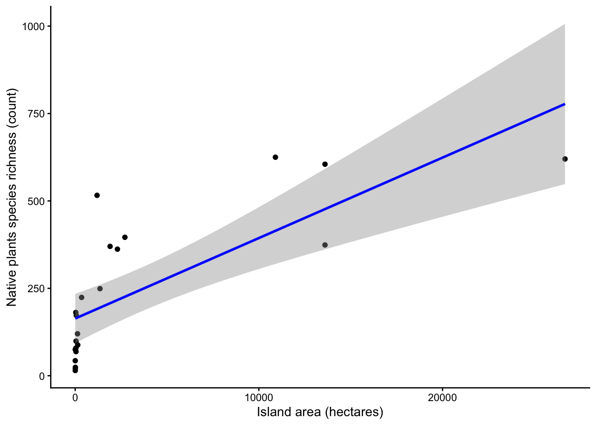
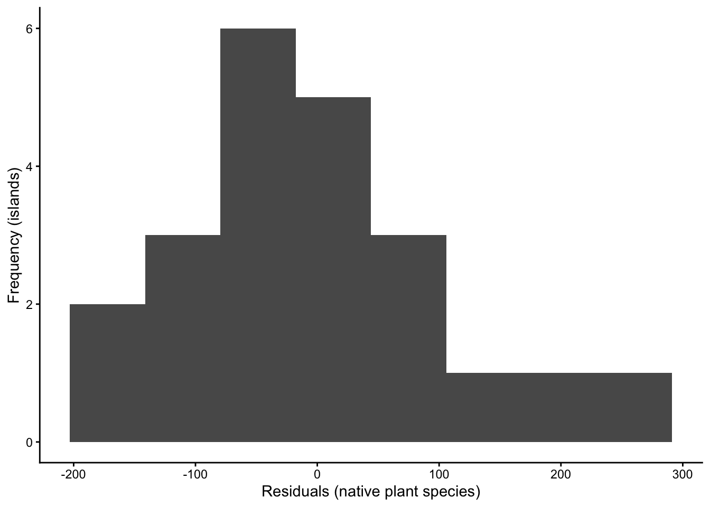
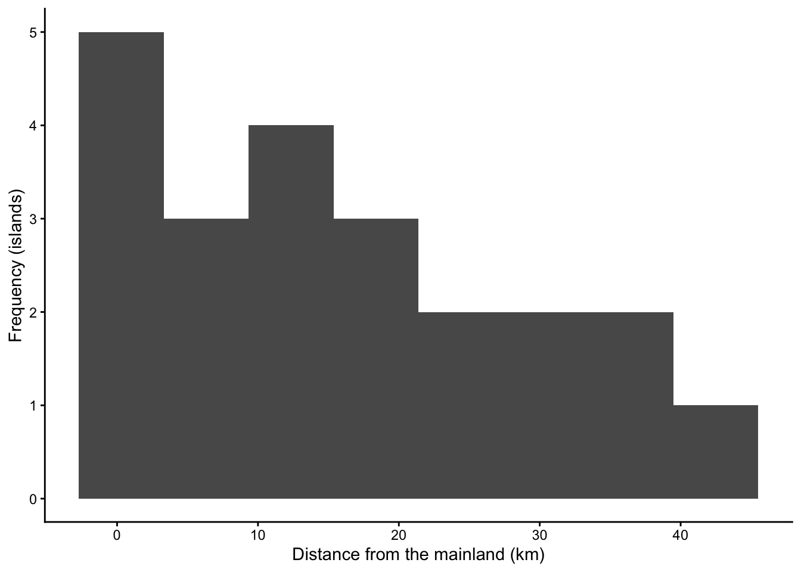
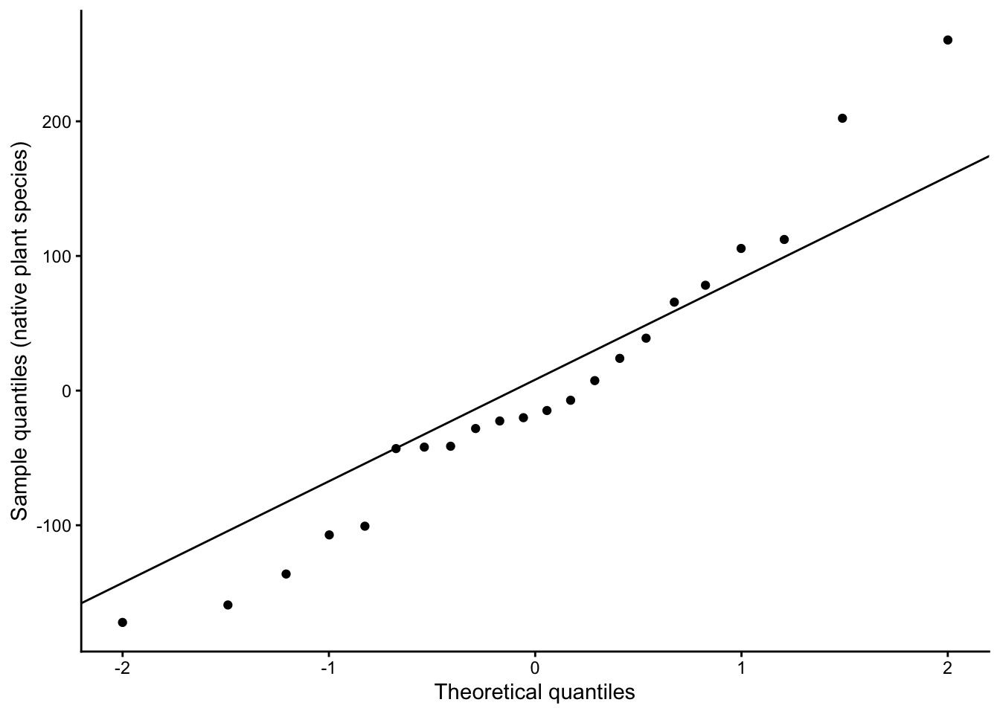
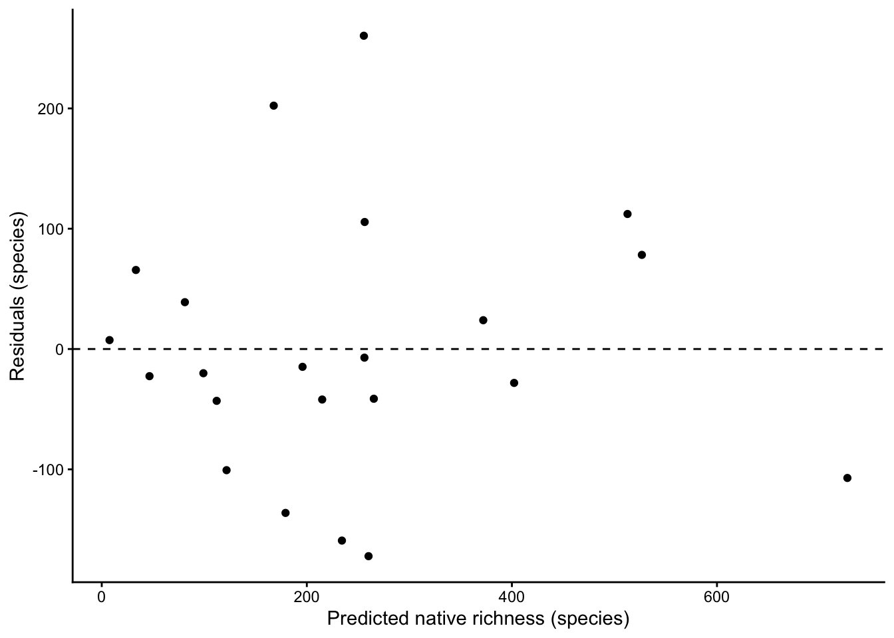
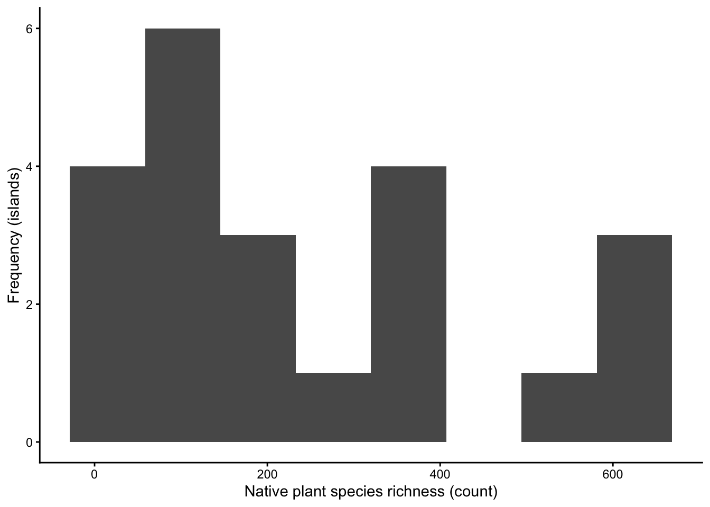
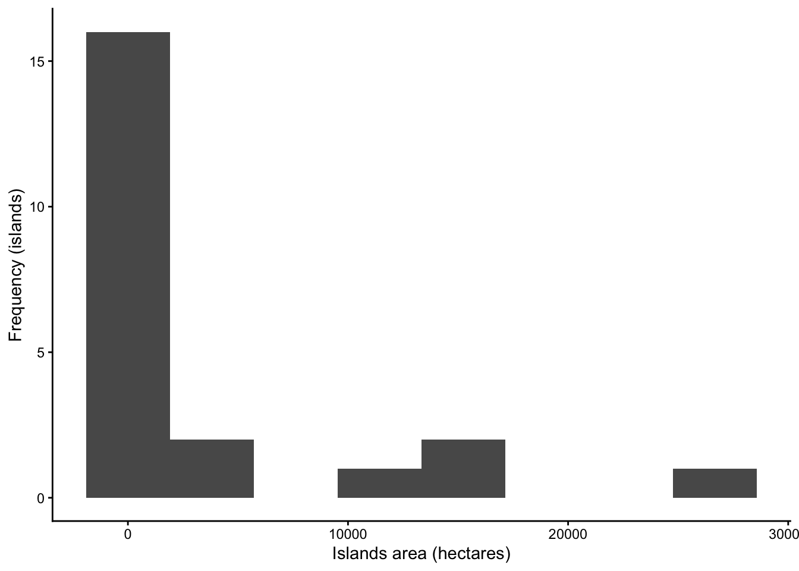
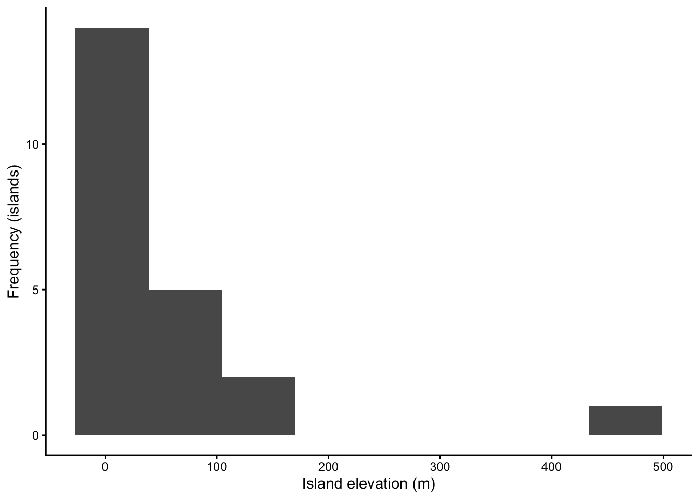

# Name - Queen's Student Number
# 1. Ziadie Diebel - Student Number
# 2. Member 2 - Student ID
# 3. Member 3 - Student ID
# 4. Member 4 - Student ID
# 5. Member 5 - Student IDBIOL343 Coding Challenge 7: Choosing among models
Group Members
DO THIS FIRST
Copy and paste these two lines into your R Console to install the current positpal, then restart R (Session → Restart R, or the restart button in the Console) before anything else. Do not include them as a code chunk.
install.packages("remotes")
remotes::install_url("https://quantitative.bio/downloads/positpal.tar.gz", upgrade = "never")After the restart, paste this line, replacing FILENAME.Rmd with the name you are going to use for the .R or .Rmd file you are going to upload (rename the template first, e.g. Group_#_CC7.Rmd, and use that exact name):
positpal::start("FILENAME.Rmd")Before you run it: create or open an R project folder for this challenge so that it is your working directory, then save this file in that folder under the name you will upload, and check that autosave is on (File → Auto Save). Closing the laptop or quitting Positron does not lose your log: when you reopen the project folder, positpal picks up where you left off and says so in the Console after your first command. Every time you open Positron to work on this file, run the start() line again, even if positpal says it picked up where you left off; it continues the same log and never erases it. See OnQ and use the positpal chatbot if you are having trouble with positpal.
Part 1 — Import
The data file is data/islands.csv: one row per island off the east coast of North America, with the number of native and non-native plant species and the physical and historical features of each island. The instructions describe the study, the variables and the hypotheses. Do not edit the file by hand.
So far you have tested one model at a time against a null hypothesis. This week you will compare several models, each representing a different hypothesis, and ask which one the data support best. You will work only with native species richness. Use the variables as they are in the file until the last task.
As in earlier challenges, the tasks tell you what to produce, not which function to use. The starter lines in some chunks are commented out so that the blank template knits; remove the # as you fill them in.
Import and inspect the data
Import the data as an object called islands, check its structure and count the missing values in each column. Use islands for the rest of the challenge.
#Import Library
library(tidyverse)
library(lmtest)
islands= read.csv("islands.csv")
# Inspecting data
head(islands) Island tot.rich ntv.rich nonntv.rich pct.nonntv area latitude elev
1 Appledore_Island 182 79 103 57 40 42.99 18
2 Bear_Island 64 43 21 33 3 41.25 13
3 Block_Island 661 396 265 40 2707 41.18 64
4 Cuttyhunk_Island 311 173 138 44 61 41.42 46
5 Fishers_Island 920 516 404 44 1190 41.27 40
6 Gardiners_Island 390 249 141 36 1350 41.08 37
dist.mnland dist.island soil.types years.isol years.deglac human.pop
1 10.0 10.0 6 7000 12640 0
2 0.3 0.3 1 3800 15000 0
3 20.6 20.6 59 10000 15000 1010
4 10.8 0.4 11 4700 14900 86
5 2.7 2.7 35 7200 15000 289
6 6.7 6.7 37 5000 14950 0
human.dens
1 0.00
2 0.00
3 0.37
4 1.41
5 0.24
6 0.00colSums(is.na(islands)) Island tot.rich ntv.rich nonntv.rich pct.nonntv area
0 0 0 0 0 0
latitude elev dist.mnland dist.island soil.types years.isol
0 0 0 0 4 0
years.deglac human.pop human.dens
0 0 0 # Compare medians and maximums of numeric columns
islands |>
summarise(across(where(is.numeric), list(median= ~median(.x, na.rm= TRUE),
max= ~ max(.x, na.rm= TRUE)))) |>
pivot_longer(everything(), names_to= c("variable", ".value"), names_sep= "_")# A tibble: 14 × 3
variable median max
<chr> <dbl> <dbl>
1 tot.rich 329 1166
2 ntv.rich 177 625
3 nonntv.rich 134. 541
4 pct.nonntv 43 67
5 area 134 26668
6 latitude 41.5 45.0
7 elev 22 466
8 dist.mnland 13.3 42.5
9 dist.island 5.7 21
10 soil.types 13.5 74
11 years.isol 7100 14000
12 years.deglac 14900 15000
13 human.pop 0 10760
14 human.dens 0 1.41Question 1: Which column has missing values, and how many? Compare the median and the maximum of each numeric column: which of the variables in the hypotheses have a few values far larger than most of the others?
Answer: The “soil.types” column has missing values in exactly 4 of its cells (filled in as NA). The distance from the mainland (dist.mnland) and the distance from the island (dist.island) variables are strongly right-skewed, with a few islands having values larger than the median.
Part 2 — Goodness of fit
R² as a measure of fit
Plot native richness (y) against island area (x) with a fitted straight line, axis labels and a clean theme. Fit a linear model of native richness with area as the only predictor, and print the summary. Calculate the model’s R² yourself from the predicted and observed values. Then fit a second model with all six predictors from the hypotheses (area, elevation, distance from the mainland, latitude, years since isolation and years since deglaciation) and print its summary.
ggplot(islands, aes(x= area, y= ntv.rich)) +
geom_point() +
geom_smooth(method= "lm", se= TRUE, colour= "blue") +
labs(x= "Island area (hectares)",
y= "Native plants species richness (count)") +
theme_classic()
# Area only model
area_mod= lm(ntv.rich ~ area, data= islands)
summary(area_mod)
Call:
lm(formula = ntv.rich ~ area, data = islands)
Residuals:
Min 1Q Median 3Q Max
-157.36 -100.89 -56.15 109.86 324.98
Coefficients:
Estimate Std. Error t value Pr(>|t|)
(Intercept) 1.636e+02 3.384e+01 4.836 1e-04 ***
area 2.301e-02 4.545e-03 5.064 5.94e-05 ***
---
Signif. codes: 0 '***' 0.001 '**' 0.01 '*' 0.05 '.' 0.1 ' ' 1
Residual standard error: 141.1 on 20 degrees of freedom
Multiple R-squared: 0.5618, Adjusted R-squared: 0.5399
F-statistic: 25.64 on 1 and 20 DF, p-value: 5.94e-05# Manual R^2 calculation from predicted and observed values
y_obs= islands$ntv.rich
y_pred= predict(area_mod)
ss_res= sum((y_obs - y_pred)^2)
ss_tot= sum((y_obs - mean(y_obs))^2)
r2_manual= 1 - (ss_res / ss_tot)
r2_manual[1] 0.561783all_mod= lm(ntv.rich ~ area + elev + dist.mnland + latitude + years.isol + years.deglac, data= islands)
summary(all_mod)
Call:
lm(formula = ntv.rich ~ area + elev + dist.mnland + latitude +
years.isol + years.deglac, data = islands)
Residuals:
Min 1Q Median 3Q Max
-172.19 -42.80 -17.46 59.00 260.40
Coefficients:
Estimate Std. Error t value Pr(>|t|)
(Intercept) 2.945e+03 4.065e+03 0.725 0.4798
area 2.074e-02 8.683e-03 2.388 0.0305 *
elev 4.631e-01 6.756e-01 0.685 0.5035
dist.mnland 2.140e+00 2.400e+00 0.892 0.3867
latitude -7.046e+01 7.615e+01 -0.925 0.3695
years.isol 1.045e-02 1.645e-02 0.635 0.5349
years.deglac 6.262e-03 7.158e-02 0.087 0.9314
---
Signif. codes: 0 '***' 0.001 '**' 0.01 '*' 0.05 '.' 0.1 ' ' 1
Residual standard error: 128.5 on 15 degrees of freedom
Multiple R-squared: 0.7274, Adjusted R-squared: 0.6184
F-statistic: 6.671 on 6 and 15 DF, p-value: 0.001362Question 2: Does your R² match the one in the summary? The six-predictor model has a higher R² than the area model. Does that mean it is a better model? What does the adjusted R² do differently?
Answer:Yes, the manually calculated \(R^2\) (0.5618) matches the Multiple R-squared in summary (area_mod) value (0.5618). Although the six-predictor model has a higher \(R^2\) (0.7274 vs. 0.5618), that does not mean it is a better model: adding any predictor variable will always increase (or maintain) \(R^2\) by fitting random noise, which leads to overfitting. Adjusted \(R^2\) (0.6184 for all_mod vs. 0.5399 for area_mod) penalizes the model for the number of predictors relative to the sample size, so it only increases if a newly added predictor imporves the fit more than expected by chance.
Comparing nested models with ANOVA
Hypothesis 1 says native richness depends on island area and elevation but not on distance from the mainland. Fit a model with area, elevation and distance from the mainland as predictors (the hypothesis 1 model). Use an ANOVA to test whether it fits the data better than the model with area alone.
# Hypothesis 1 model
h1_mod= lm(ntv.rich ~ area + elev + dist.mnland, data= islands)
summary(h1_mod)
Call:
lm(formula = ntv.rich ~ area + elev + dist.mnland, data = islands)
Residuals:
Min 1Q Median 3Q Max
-153.89 -107.49 -54.30 94.96 337.94
Coefficients:
Estimate Std. Error t value Pr(>|t|)
(Intercept) 154.900823 60.992354 2.540 0.0205 *
area 0.026365 0.009269 2.844 0.0108 *
elev -0.257595 0.649489 -0.397 0.6963
dist.mnland 0.772537 2.686386 0.288 0.7770
---
Signif. codes: 0 '***' 0.001 '**' 0.01 '*' 0.05 '.' 0.1 ' ' 1
Residual standard error: 147.3 on 18 degrees of freedom
Multiple R-squared: 0.5702, Adjusted R-squared: 0.4985
F-statistic: 7.959 on 3 and 18 DF, p-value: 0.001381# Comparison with ANOVA
anova(area_mod, h1_mod)Analysis of Variance Table
Model 1: ntv.rich ~ area
Model 2: ntv.rich ~ area + elev + dist.mnland
Res.Df RSS Df Sum of Sq F Pr(>F)
1 20 397957
2 18 390345 2 7612.1 0.1755 0.8404Question 3: Why are these two models nested? Which is the full and which the reduced model? Does adding elevation and distance from the mainland improve the fit more than expected by chance? What does that say about hypothesis 1?
Answer: Thw two models are nested because area_mod (the reduced model) contains a subset of the predictors in h1_mod (the full model), equivalent to setting the slopes for elev and dist.mnland to zero.
Adding elevation and distance from the mainland does not improve the fit more than expected by chance (\(F_2, _1\)\(_8\) = 0.176, p=0.840). This means Hypothesis 1 is only partially supported, native richness increases strongly with island area (p < 0.001) and is unaffected by distance from the mainland (p = 0.777) as predicted. Opposite to Hypothesis 1 elevation appears to have no significant effect (p = 0.696).
Part 3 — Likelihood
The likelihood ratio test
Compare the same two models with a likelihood ratio test. Then calculate the test statistic and its p-value yourself from the two log-likelihoods.
lrtest(area_mod, h1_mod)Likelihood ratio test
Model 1: ntv.rich ~ area
Model 2: ntv.rich ~ area + elev + dist.mnland
#Df LogLik Df Chisq Pr(>Chisq)
1 3 -139.05
2 5 -138.84 2 0.4249 0.8086ll_area= as.numeric(logLik(area_mod))
ll_h1= as.numeric(logLik(h1_mod))
lrt_stat= 2 * (ll_h1 - ll_area)
df_diff= attr(logLik(h1_mod), "df") - attr(logLik(area_mod), "df")
p_lrt= pchisq(lrt_stat, df= df_diff, lower.tail= FALSE)
lrt_stat[1] 0.4248943df_diff[1] 2p_lrt[1] 0.8086031Question 4: What do the #Df values (3 and 5) count? Compare the p-values from the LRT and the ANOVA. Do the two tests reach the same conclusion? Why are they not exactly the same?
Answer: The Df values count the total number of estimated parameters in each model. Thus area_mod hs 3 parameters and h1_mod has 5. Both tests reach the exact same conclusion, that adding elevation and distance from the mainlabd does not significantly improve model fit (p = 0.809 for the LRT vs. p = 0.840 for the ANOVA). their p-values differ slightly because…
Part 4 — Information criteria
Five competing hypotheses
Hypothesis 2 says native richness depends on the islands’ history: years since deglaciation, latitude and years since isolation. Fit the hypothesis 2 model and an intercept-only (null) model. Then compare the five models you now have (null, area, hypothesis 1, hypothesis 2, all six predictors) with AIC, AICc and BIC. For the model with the lowest AICc, calculate how many times more likely it is than each of the other four.
library(MuMIn)
# Fit Hypothesis 2 and null (intercept-only) models
h2_mod= lm(ntv.rich ~ years.deglac + latitude + years.isol, data= islands)
null_mod= lm(ntv.rich ~ 1, data= islands)
summary(h2_mod)
Call:
lm(formula = ntv.rich ~ years.deglac + latitude + years.isol,
data = islands)
Residuals:
Min 1Q Median 3Q Max
-287.27 -95.31 -28.01 55.20 309.35
Coefficients:
Estimate Std. Error t value Pr(>|t|)
(Intercept) -9.148e+03 3.590e+03 -2.548 0.02017 *
years.deglac 2.089e-01 7.088e-02 2.947 0.00863 **
latitude 1.557e+02 6.501e+01 2.394 0.02776 *
years.isol -1.970e-02 1.764e-02 -1.117 0.27884
---
Signif. codes: 0 '***' 0.001 '**' 0.01 '*' 0.05 '.' 0.1 ' ' 1
Residual standard error: 174.6 on 18 degrees of freedom
Multiple R-squared: 0.3955, Adjusted R-squared: 0.2948
F-statistic: 3.926 on 3 and 18 DF, p-value: 0.0256# Comparing the models
AIC(null_mod, area_mod, h1_mod, h2_mod, all_mod) df AIC
null_mod 2 300.2514
area_mod 3 284.1005
h1_mod 5 287.6756
h2_mod 5 295.1769
all_mod 8 283.6564AICc(null_mod, area_mod, h1_mod, h2_mod, all_mod) df AICc
null_mod 2 300.8830
area_mod 3 285.4339
h1_mod 5 291.4256
h2_mod 5 298.9269
all_mod 8 294.7333BIC(null_mod, area_mod, h1_mod, h2_mod, all_mod) df BIC
null_mod 2 302.4335
area_mod 3 287.3737
h1_mod 5 293.1309
h2_mod 5 300.6321
all_mod 8 292.3847# Likelihood
aicc_vals= AICc(null_mod, area_mod, h1_mod, h2_mod, all_mod)
delta_aicc= aicc_vals$AICc - min(aicc_vals$AICc)
times_more_likely= exp(delta_aicc / 2)
data.frame(model= rownames(aicc_vals), AICc= aicc_vals$AICc,
delta_AICc= delta_aicc, times_more_likely= times_more_likely) model AICc delta_AICc times_more_likely
1 null_mod 300.8830 15.449149 2263.28939
2 area_mod 285.4339 0.000000 1.00000
3 h1_mod 291.4256 5.991772 20.00308
4 h2_mod 298.9269 13.493057 851.09911
5 all_mod 294.7333 9.299454 104.55644Question 5: Which model is best by AIC, by AICc and by BIC? Using the rules of thumb (a difference under 2 means equivalent, over 6 means clearly worse), which models are equivalent to the best one by AICc and which are clearly worse? Why does AICc disagree with AIC here? Which hypothesis is best supported, and what does the hypothesis 2 model tell you on its own?
Answer: AIC - all_mod AICc - area_mod BIC - area_mod
Based on the AICc results no models are equavalent to area_mod, and h1_mod, h2_mod, all_mod and null_mod are clearly worse. Overall, island area alone is the best supported hypothesis.
Missing values
Hypothesis 1 leaves out the number of soil types, which might also affect native richness. Fit a model with area and the number of soil types as predictors, and compare its AIC with the area-only model. Check how many islands each model used. Then make a dataset with only the islands that have no missing values in the columns you need, refit both models to it, and compare them again with AIC, AICc and a likelihood ratio test.
soil_mod= lm(ntv.rich ~ area + soil.types, data= islands)
AIC(area_mod, soil_mod)Warning in AIC.default(area_mod, soil_mod): models are not all fitted to the
same number of observations df AIC
area_mod 3 284.1005
soil_mod 4 227.8375# Check sample sizes
nobs(area_mod)[1] 22nobs(soil_mod)[1] 18# subset so the rows have no missing values
islands_clean= na.omit(islands[, c("ntv.rich", "area", "soil.types")])
# Making both models identical datasets
area_mod_clean= lm(ntv.rich ~ area, data= islands_clean)
soil_mod_clean= lm(ntv.rich ~ area + soil.types, data= islands_clean)
AIC(area_mod_clean, soil_mod_clean) df AIC
area_mod_clean 3 233.9369
soil_mod_clean 4 227.8375AICc(area_mod_clean, soil_mod_clean) df AICc
area_mod_clean 3 235.6512
soil_mod_clean 4 230.9144lrtest(area_mod_clean, soil_mod_clean)Likelihood ratio test
Model 1: ntv.rich ~ area
Model 2: ntv.rich ~ area + soil.types
#Df LogLik Df Chisq Pr(>Chisq)
1 3 -113.97
2 4 -109.92 1 8.0994 0.004428 **
---
Signif. codes: 0 '***' 0.001 '**' 0.01 '*' 0.05 '.' 0.1 ' ' 1Question 6: Before you removed the missing values, which model looked better by AIC, and by how much? Why was that comparison wrong? After the fix, does the number of soil types improve the model? What did removing the missing values cost?
Answer: Before removing the missing values, soil_mod looked much better by AIC. That comparison was invalid because area_mod was fit to all 22 islands, whereas soil_mod silently dropped the 4 islands with missing soil.types and was fit to only 18 islands. Log likelihood and AIc scale with sample size so models fit to different data subsets cannot be compared. After refitting both models to the same 18 islands, adding soil.types still significantly improves the model. Removing the missing values cost 4 islands (~18 % of the dataset), reducing statistical power and preventing direct comparison with the 22-island model.
Part 5 — Checking the models
Residuals, transformation and one-step reanalysis
Do this on the untransformed data first: run your chunks (or render to HTML) and look at the results. Check whether the six-predictor model meets the assumptions about its residuals: plot a histogram of the residuals, a Q-Q plot of the residuals, and the residuals against the predicted values. Look at the distributions of the response and the predictors too. Decide which variables to transform. Make the change once, in the chunk of the first task, so that the transformed values replace the originals and every model, test and table below uses them without being edited. Update any axis titles that the change makes wrong. Then knit again. Do not rewrite your answers to Questions 2–6: they describe the untransformed analysis.
diag_df= data.frame(
fitted= fitted(all_mod),
resid= resid(all_mod)
)
# Histogram of residuals
ggplot(diag_df, aes(x= resid)) +
geom_histogram(bins= 8) +
labs(
x= "Residuals (native plant species)",
y= "Frequency (islands)"
) +
theme_classic()
ggplot(islands, aes(x= dist.mnland)) +
geom_histogram(bins= 8) +
labs(
x= "Distance from the mainland (km)",
y= "Frequency (islands)"
) +
theme_classic()
# Q-Q plot of residuals
ggplot(diag_df, aes(sample= resid)) +
geom_qq() +
geom_qq_line() +
labs(
x= "Theoretical quantiles",
y= "Sample quantiles (native plant species)"
) +
theme_classic()
# Residuals vs. predicted values
ggplot(diag_df, aes(x= fitted, y=resid)) +
geom_point() +
geom_hline(yintercept= 0, linetype= "dashed") +
labs(
x= "Predicted native richness (species)",
y= "Residuals (species)"
) +
theme_classic()
# Check distribution of the variables (response and predictor)
# X plot for ntv. rich
ggplot(islands, aes(x= ntv.rich)) +
geom_histogram(bins= 8) +
labs(x= "Native plant species richness (count)", y= "Frequency (islands)") +
theme_classic()
# X plot for area
ggplot(islands, aes(x= area)) +
geom_histogram(bins= 8) +
labs(x= "Islands area (hectares)", y= "Frequency (islands)") +
theme_classic()
# X plot for elev
ggplot(islands, aes(x= elev)) +
geom_histogram(bins= 8) +
labs(x= "Island elevation (m)", y= "Frequency (islands)") +
theme_classic()
Question 7: Which variables did you transform, and what in the plots told you to? Compare the untransformed and transformed results: what changed in the fit of the models, in which model AIC, AICc and BIC choose, and in your conclusion about soil types? How long did it take to redo the whole analysis, and what would it have taken if you had done each step by hand (for example, copying numbers into a spreadsheet or typing them into your answers)?
Answer:
DO THIS LAST
When your document is finished, knit it, open the .html in a web browser and print it to PDF (File → Print → Save as PDF; name it Group_#_CC7.pdf). Then copy and paste this into the R Console to stop positpal and create your coding log. Do not include it as a code chunk.
positpal::stop_capture()
positpal::export_capture()export_capture() prints the name and location of the my-capture-YYYYMMDD-HHMMSS.zip it creates beside this file. Each group member uploads their own .zip to the “CC7 — Coding Log (individual)” dropbox on OnQ; the group’s .Rmd, .html and .pdf (OnQ shows uploaded HTML as source code, so the PDF is what gets graded; the .html is a back-up) go to your section’s TUT02-CC7 or TUT03-CC7 folder. Submissions without the log are incomplete. If export_capture() fails, zip the .capture folder yourself and upload that instead.